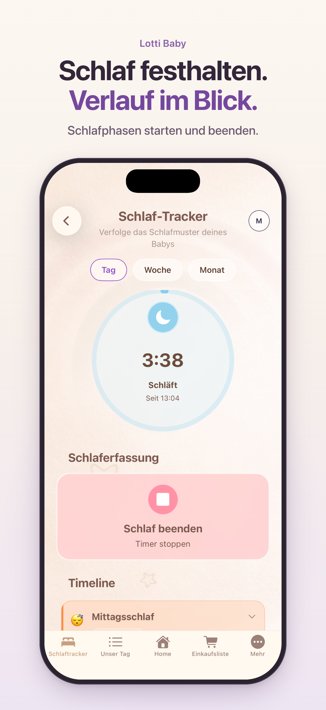

03 BABYSCHLAF
Weniger merken. Schlafzeiten nachschauen.
Wie lange ging das Mittagsschläfchen? Wann ist euer Baby aufgewacht? Mit dem Schlaf-Tracker von Lotti Baby haltet ihr Schlafphasen fest und könnt im Verlauf nachschauen, was ihr eingetragen habt.
Lotti Baby im App StoreFür iPhone und iPad. Anmeldung erforderlich. Der Funktionsumfang hängt vom gewählten Abonnement ab; Preise und Laufzeiten seht ihr vor dem Kauf in der App.

IM ALLTAG
So entsteht euer Schlaftagebuch
Schlaf starten
Startet den Schlaf-Tracker, wenn ihr eine Schlafphase festhalten möchtet. Der Timer merkt sich den Beginn für euch.
Schlaf beenden
Beendet den Eintrag, wenn euer Baby wieder wach ist. Die erfasste Schlafphase bleibt im Verlauf sichtbar.
Zeiten gemeinsam nachsehen
Mit verknüpften Accounts könnt ihr beide auf die Baby-Daten zugreifen. Das erleichtert den Überblick, wenn ihr euch im Alltag abwechselt.
Beobachten, ohne Schlafziele erfüllen zu müssen
Das Schlaftagebuch ist eine Erinnerungshilfe für euch. Es muss nicht jeder Tag vollständig sein. Neben dem Schlaf könnt ihr Mahlzeiten und Windeln festhalten, damit wichtige Informationen bei der nächsten Übergabe schnell zu finden sind.